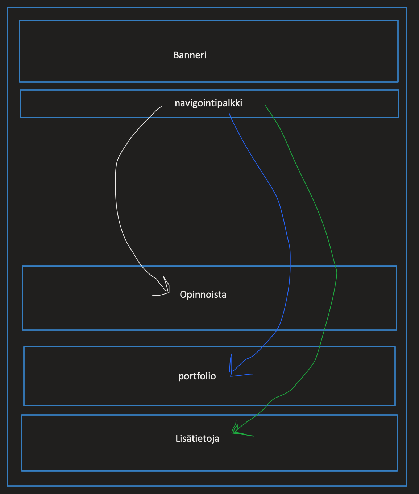
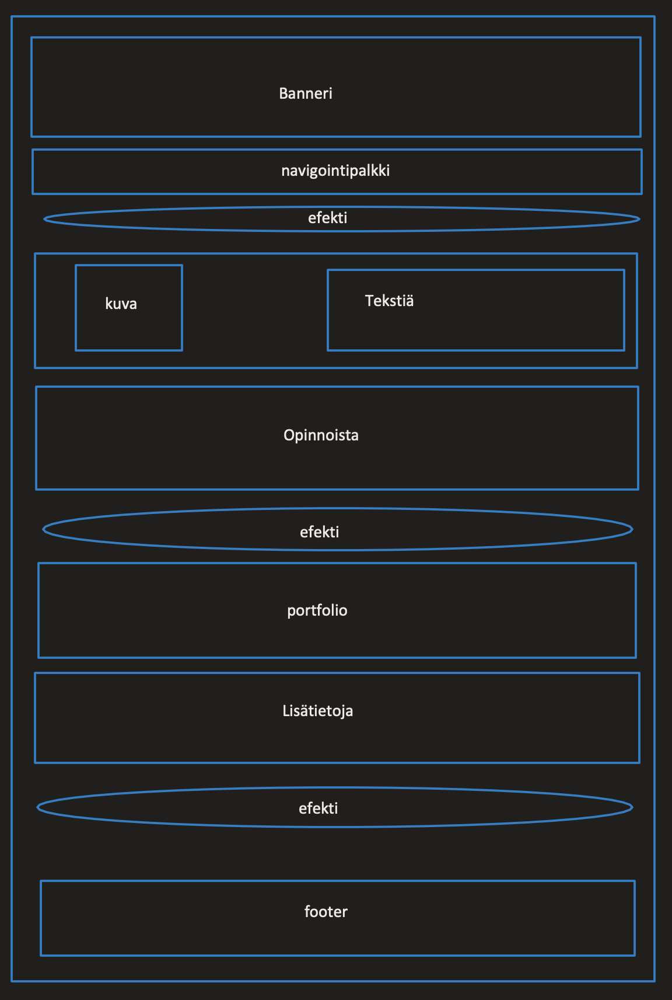

Synopsis
Henkilökohtainen sivusto - Harri Honkanen
Henkilökohtainen sivusto
SynopsisHenkilökohtainen internet-sivusto tehdään lähtökohtaisesti opiskelijan työnhakua edistämään. Sivustolle on sisällytetty myös portfolio, josta näkee opiskelijan aikaisemmat työt ja työhistorian.
Sivusto tehdään työnhakua edistämään ja sivuston ensisijaisena kohderyhmänä onkin yritysten henkilökunta. Yritysten henkilöstön rekrytointiin kuuluvat ihmiset voivat tulla vierailemaan sivustolle ja lukemaan enemmän hakijasta rekrytointiprosessin aikana. Sivuston toissijaisena kohderyhmänä on erilaiset headhunterit eli rekrytointiyritysten henkilökunta, jotka etsivät työntekijöitä ja tarjoavat erilaisia työtarjouksia. Sivuston on tarkoitus palvella rekrytointiin liittyviä ammattilaisia tarjoten mahdollisimman paljon informaatiota heille.
Harri Honkanen vastaa sivuston kehityksestä ja julkaisusta.
Sivuston laajuus on kattava etusivu. Etusivu sisältää esittelyn, opinnot, portfolion sekä lisätietoja.
Sivusto julkaistaan Labranetin palvelimelle. Näkymän skaalautuminen tehdään kolmeen eri resoluutioon, tietokoneille minimileveytenä 1200px, tabletille miniminileveytenä 786px ja mobiiliin maksimileveytenä 600px. Sivusto noudattaa HTML5 -standardia.
Labranetin palvelin käyttää HTTPS -protokollaa, jolla varmistetaan suojattu tiedonsiirto palvelimelta selaimelle.
Sivuston Layout tulee olemaan selkeä, jokainen osio eritelty omaksi omalla värillä. Osiot ovat koko ikkunan levyisiä ja sisällön leveyttä rajoitetaan. Käyttöliittymässä käytetään 'hover' -efektejä linkeille ja muille toiminnoille jotka aktivoivat toimintoja tai avaavat linkkejä.
Sivuston ylläpidosta vastaa Harri Honkanen ja sivustoa tullaan päivittämään tarpeen tullen.
Sivustolla tullaan käyttämään ainakin tekstiä, grafiikkaa, kuvia, javascipt-efektejä ja parallax-efektejä.
Mahdolliset tekijänoikeudet tullaan ottamaan huomioon ja merkitään selkeästi sivustolla ja lähdekoodissa.
Rakennekaavio
Layout
Testitulokset
Testatut selaimet:
- Chrome. Version 99.0.4844.84 (Official Build) (x86_64)
- Safari. Version 15.4 (17613.1.17.1.6)
- Firefox. 98.0.2 (64-bittinen)
Resurssit
Työvaiheet olivat:
- Layoutin suunnittelu
- Layoutin toteutus
- Värit ja fontit
- Sisällön tuotto
- Efektit ja Javascript-funtiot
- Testaus ja korjaus
- Viimeistely ja lataus palvelimelle
Kommentit
Pidin harjoitustyön tekemisestä. Töiden ohessa aika vähän ollut aikaa, mutta jatkuvasti oppii uutta.
Aikaa meni kaikenkaikkiaan kahden viikon aikana 2h/päivä. Opiskelin samalla eri tekniikoita ja testailin paljon. Sen takia noin paljon.
Sivut voisivat olla visuaalisesti paremmat. Värit, fontit ja asettelu. Scriptit ja CSS-tiedosto voisi olla siistimpiä. Tässä ajassa sai tämän verran tehtyä. Ajankäytön suhteen olen tyytyväinen, että sain responsiiviset sivut luotua kolmelle eri laitteelle ja JS:llä scroll-efektit ja taustalle parallax-efekti ja navbar toimii myös mobiilissa.